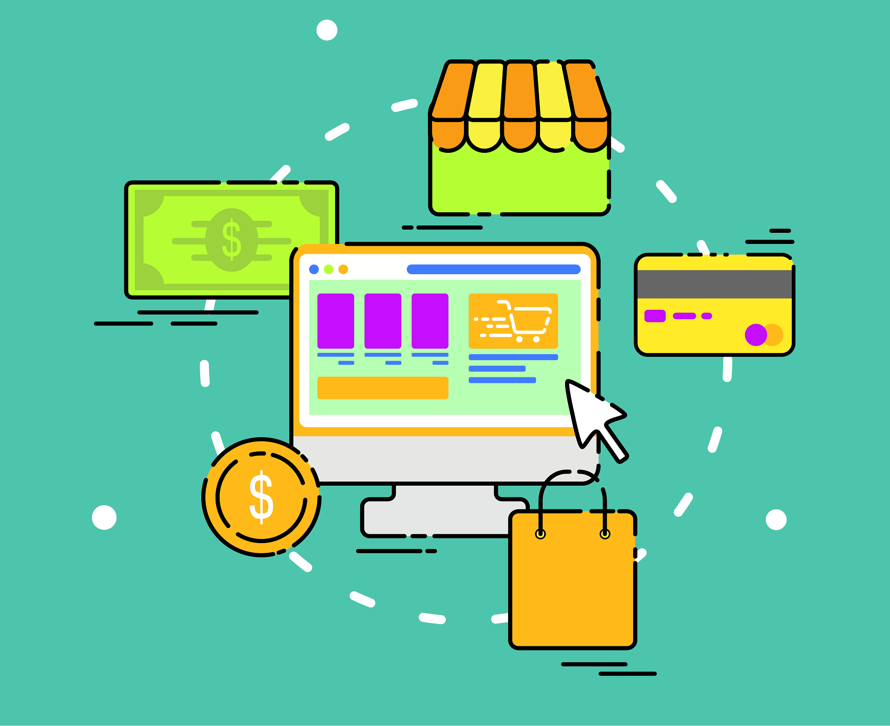

Reverse Auction
When you think about an auction you have one person selling something and a lot of people bidding to buy it which makes the price go up.. A reverse auction is the opposite.
The Process: One person who wants to buy something a company or a group of people says they need a product or service. Then a lot of people who sell that product or service try to sell it to them by bidding on the price. They keep lowering the price until they win.
Characteristics:
- Real-Time Competition: The people selling see where they rank, like "you're the second lowest price right now" and they have to decide if they can lower their price even more to win.
- Strict Specifications: The person buying says what they want before anyone starts bidding so everyone knows they are bidding on the same thing and it is fair.
Benefits:
- Cost Efficiency: The people buying often pay 15 to 25 percent less than they would if they just bought it at a store.
- Transparency: All the people selling can see what the current price is so there are no deals.
- Market Speed: Something that used to take weeks to figure out can now be done in 30 minutes, which is really fast. Reverse Auction is a way to buy things because of this. Reverse Auction makes buying things easier and faster for the buyer.

Reverse Auction Websites
Traditional Auction vs Reverse Auction
| Feature |
Traditional Auction |
Reverse Auction |
| Primary Goal |
Selling an item for the highest price |
Buying a service/good for the lowest price |
| Who Bids? |
Multiple Buyers |
Multiple Sellers |
| Price Trend |
Ascending |
Descending |
| Typical Use |
Real estate, art, eBay |
Government contracts, raw materials, B2B services |
Group Purchasing
Group Purchasing, which is also known as Collective Buying happens when lots of buyers come together and combine what they want to buy. This way they can act like one buyer who is going to purchase a large quantity of something. Group Purchasing is when many buyers join forces to do this.
So why do we need Group Purchasing?
We need Group Purchasing because a single small business does not have any power when dealing with a supplier. When 100 small businesses come together as one they can ask for better prices like the prices that big companies get.
Group Purchasing helps with Lower Unit Costs. When we buy things as a group suppliers are happy to make a little money because they know they will sell a lot of things.
Group Purchasing also helps reduce risk. When we are part of a group the group checks out the supplier to make sure they are good so individual members of the Group Purchasing do not have to waste time and money making sure the supplier is okay.
E-marketplace
An e-marketplace is where these transactions happen. It has two parts:
- The Frontend
The Frontend is about the user experience. It's everything a customer or seller sees. Interacts with to make a decision. Its main job is to make buying easy.
- The Storefront is where products are shown with pictures, descriptions and prices.
- Search and Discovery tools help users find what they need by filtering price, category or rating.
- Interaction Points include buttons "Buy links, shopping carts and bidding interfaces for auctions.
- The Customer Service Portal has chat boxes. Help forms where users can ask for assistance.
- The goal is to build trust and help users make a purchase or bid.
- The Backend
The Backend is about the business logic. It's the system that makes the frontend work. If the frontend is what users see the backend is how it happens.
- Inventory & Data Management keeps track of every item how many are left and who is selling them. It makes sure you don't sell items than you have.
- Order Fulfillment starts when a "Buy" button is clicked. It communicates with the warehouse makes a shipping label and updates the buyer.
- Payment Processing is a system that takes the customers money checks it and makes sure the seller gets paid.
- Bidding Logic is like a referee in an auction. It tracks every bid and alerts sellers when they've been outbid.
- Analytics & Reporting is like the businesss brain. It collects data on what people're buying so the owner can make decisions on marketing or pricing.
How they work together?
Imagine a user joins a Group Purchase on your platform:
- The user sees a Group Buy deal for a 4K Monitor with a progress bar: "Need 10 buyers to unlock 20% off." The user clicks "Join."
- The Frontend tells the Backend: "User #502 wants to join Group Buy #A1."
- The Backend updates the database. Realizes this is the final buyer needed to unlock the discount. It sends a signal back.
- The progress bar turns green. Says, "Deal Unlocked! Your price is now $200."
- The Backend charges all 50 participants credit cards. Sends the order to the supplier, for bulk shipping.

E-marketplace Websites